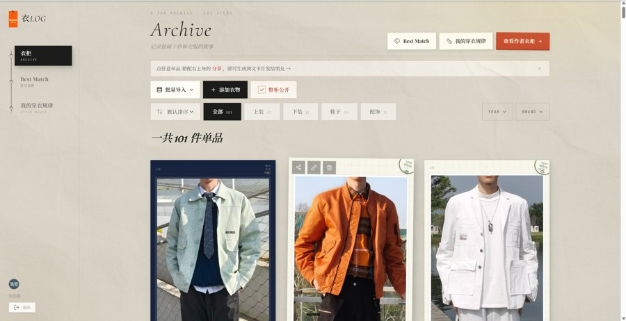

WEARLOG.CN · 衣橱档案馆
科技时代的
文艺复兴
Build something I use every day.
不是发现痛点，是先有忍不住要记录的生活——备忘录里写了多年的「模子の衣柜」，长成了一座 101 件衣物的档案馆：每件衣服一张档案卡，品牌、故事、搭配与颜色分析，线上可访问。
01复古 · 温暖 · 时尚的产品审美 —— 拟物材质、吊牌语言，每一处都调过
02档案 —— 品牌、购入故事、穿着记录，像藏品一样编号归档
03Best Match + 审美分析 —— 搭配成为可复用的判断，规律从记录里长出来
访问 Wearlog · wearlog.cn →
React 19 · TypeScript · Supabase · Vercel · Tailwind v4 · Motion

ARCHIVE · 衣橱档案
REAL PRODUCT · 101 ITEMS